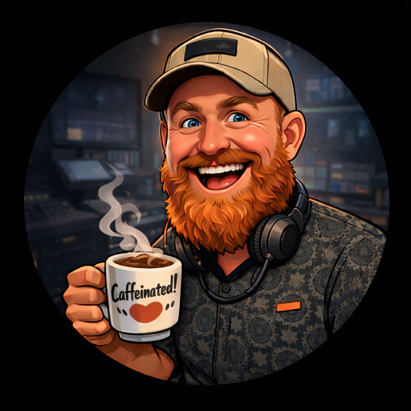

matty evans
software engineer·au
I'm a Forward Deployed Engineer at Amp Labs. We're building the model for how high-performance engineering teams will operate on the frontier.
Before that, I was at the Ethereum Foundation working on observability across the network, and Director of Engineering at Tractor Ventures. Earlier stints at Entain, Saatchi & Saatchi (London and New York), and SitePoint.
Based in Brisbane, Australia.